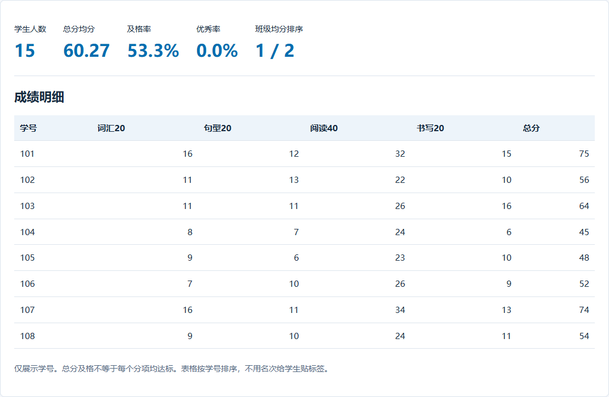

构建教学工作台
同一个成绩工作台，既能在本机使用，也能发布为跨设备访问的在线应用。


选择运行方式
先用本地版体验功能，或者直接制作可在线访问的网站应用。两版使用同一套案例素材。
| 使用方式 | 本地运行版 | 在线应用版 |
|---|---|---|
| 打开方式 | 打开HTML文件 | 电脑或手机打开发布链接 |
| 数据保存 | 当前浏览器，JSON备份 | 云数据库，按教师账号保存 |
| 交付成果 | 单文件HTML | 网站应用和实际访问网址 |
版本一 · 本地运行
单文件HTML，在当前浏览器导入和查看成绩，导出JSON留存备份。
- 上传英语或综合CSV，复制本地版提示词制作；也可以直接打开现有HTML示例。
- 重复导入同一份CSV，再修改一条分数重新导入，查看人数与统计结果。
- 导出JSON，刷新后恢复备份，核对记录。
本地运行版提示词
请根据附件制作一个单文件HTML成绩工作台，命名为“教学工作台.html”，保留本地运行方式。 支持英语、综合两种模式，CSV导入、班级与测评筛选、人数、总分均分、及格率、优秀率、班级均分排序和测评趋势。英语四项满分为20、20、40、20，总分100，及格线60、优秀线85；综合为语文、数学、英语、科学各100分，总分400，及格线240、优秀线340。导入时检查缺失值和超出满分的值，指出行列供我修正。 按“模式＋班级＋学号＋测评”更新同一条成绩，重复导入不增加人数，改分后重新计算统计。综合模板没有测评列时，让我选择或填写本次测评名称。 数据保存在当前浏览器，支持JSON备份与恢复。交付可直接打开的HTML和简短使用说明，用附件数据试一次导入、更新和恢复。
完成后看什么
重复导入人数不变，修改成绩后统计更新，JSON备份可以恢复。
版本二 · 在线应用
WorkBuddy网站应用接入云端登录与数据库，同一教师换设备后继续使用。
- 在WorkBuddy新建网站应用任务，上传同一份CSV，复制在线版提示词。
- 按提示开启身份认证和云数据库，在应用中完成一次导入。
- 发布后在手机登录同一账号，核对成绩；再用另一个账号检查各自的数据。
在线应用版提示词
请根据附件制作一个“教学成绩工作台”网站应用，使用WorkBuddy的网站应用能力和内置云服务，完成后发布为可在线访问的网址。 支持英语、综合两种模式，CSV导入、班级与测评筛选、人数、总分均分、及格率、优秀率、班级均分排序和测评趋势。英语四项满分为20、20、40、20，总分100，及格线60、优秀线85；综合为语文、数学、英语、科学各100分，总分400，及格线240、优秀线340。导入时检查缺失值和超出满分的值，指出行列供我修正。 使用云服务身份认证，提供教师注册、登录、退出和账号管理。成绩保存到云数据库；同一账号在电脑和手机登录后看到同一份数据，不同教师的数据分别管理。按“教师账号＋模式＋班级＋学号＋测评”更新成绩，重复导入不增加人数；综合模板没有测评列时，让我选择或填写测评名称。 支持导出CSV和JSON备份；导入JSON恢复时先显示将新增和更新的记录。需要开启云服务时引导我完成确认，再接好登录、读写和权限。 完成后发布网站应用，用实际发布链接检查注册登录、CSV导入、重复导入、换设备读取和账号隔离。交付真实可访问的HTTPS链接，以及更新发布和导出数据的方法。
完成后看什么
正式链接可打开；同一账号跨设备看到相同成绩；两个账号分别保存各自记录。
这里使用WorkBuddy内置云服务运行后端和保存数据，无需另购云服务器。现有示例为本地版，在线版需按提示词生成并发布。
已有本地版，继续升级
请把当前本地HTML成绩工作台升级为WorkBuddy网站应用，保留导入、统计和测评趋势等功能。接入云服务身份认证与云数据库，按教师账号分别保存数据，同一账号可以跨设备使用。增加导入原有JSON备份的入口，显示迁移结果。完成后发布上线，并用实际访问链接检查登录、保存、重复导入和跨设备读取。
已有云服务器，改用自己的服务器部署
请把这个在线工作台部署到我已有并授权使用的云服务器，保留现有业务功能、用户账号和数据隔离方式。 先核对服务器系统、域名和已有运行环境，再生成适配的生产部署文件。前端、后端和数据库需要配套运行，持久数据放在独立数据目录或持久化数据库中，服务重启和更新后继续保留；数据库账号等配置通过服务器环境变量管理。 配置HTTPS、服务自动启动和数据备份，执行部署并检查登录、保存、跨设备读取及不同账号的访问范围。若从WorkBuddy内置云服务迁移，先列出账号和数据迁移方式，再实施；原有账号无法直接迁移时说明重新登录或注册的安排。完成后交付实际访问地址、部署文件、更新方法和恢复备份的方法。
在线版的发布方法
- 在WorkBuddy首页进入“代码开发”，选择“网站开发”或“Agent应用”；也可以直接发送在线版提示词。
- 生成后打开网站应用卡片，按提示开启云服务，接入登录和数据库。
- 在预览区点击“分享”发布，或发送“发布上线”，获取自己的应用链接。
- 用实际链接登录、保存一条模拟记录，再换设备读取。后续修改后发送“更新发布”，同步到原链接。


发布前用模拟资料完成验证。云服务可用额度以当前账号页面为准。
操作图及说明参考：WorkBuddy网站应用发布、云服务。
继续完善
把阅读得分率放在显眼位置，并加一个按学号查看历次成绩的入口。
适用与扩展
初中或其他学科可换成错题跟踪、阅读记录、作业反馈和备课任务。沿用同样的本地保存或云端保存方式。